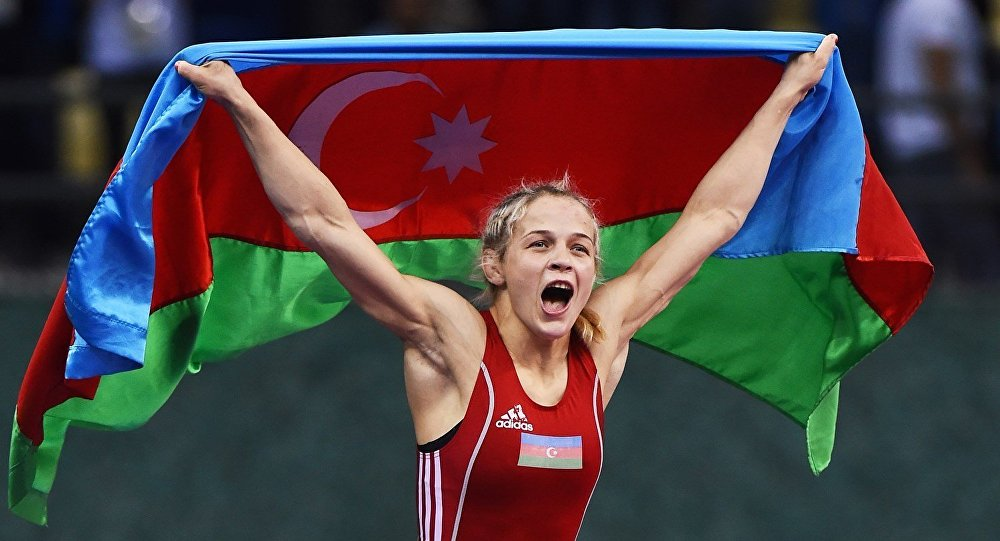

Azərbaycanda idmanın inkişafı dayanıqlı xarakter alır

Bu gün Azərbaycan idmanın inkişaf səviyyəsinə görə dünyada aparıcı ölkələrdən biri kimi tanınır. Başa çatmaqda olan 2019-cu ildə idmançılarımızın istər kütləvi, istərdə fərdi idman növlərinə görə əldə etdikləri uğurlar Azərbaycanın idman ölkəsi kimi qazandığı beynəlxalq statusu daha da möhkəmləndirmişdir. Prezident İlham Əliyev 2019-cu ilin idman yekunlarına həsr olunan mərasimdə bu məqama xüsusilə toxunaraq bildirmişdir ki, aparıcı beynəlxalq idman qurumları Azərbaycanı idman ölkəsi kimi tanıyırlar. Dövlətin yürütdüyü idman siyasəti nəticəsində idman uğurlarımızın qarşıdakı ildə də davam edəcəyinə inam böyükdür.
Ümummilli lider Heydər Əliyevin xalqın təkidilə 1993-cü ildə siyasi hakimiyyətə qayıdışından sonra digər sahələrdə olduğu kimi, idmanın inkişafı da dövlət siyasətinin prioritet istiqamətlərindən birinə çevrildi. Məhz həmin dövrdən başlayaraq, Azərbaycanın idman ölkəsinə çevrilməsi, beynəlxalq aləmdə tanınması və Olimpiya hərəkatına qoşulması prosesi geniş vüsət aldı. Qısa zamanda həyata keçirilən tədbirlər nəticəsində idmançılarımızın uğurları artmağa başladı və Azərbaycan tədricən güclü idman ölkələrinin sırasına daxil olmağı bacardı. Xüsusilə qeyd etmək lazımdır ki, 1997-ci il cənab İlham Əliyevin Milli Olimpiya Komitəsinin (MOK) prezidenti seçilməsindən sonra ölkəmizdə Olimpiya hərəkatı, bədən tərbiyəsi və idmanın inkişafı yeni mərhələyə qədəm qoydu. Azərbaycanın beynəlxalq Olimpiya hərəkatına fəal qoşulması sayəsində ölkəmiz böyük idman potensialına malik olduğunu nümayiş etdirdi. Belə ki, 2000-ci ildə Avstraliyanın Sidney şəhərində keçirilən Olimpiya Oyunlarında 2 qızıl, bir bürünc medalın qazanılması, bu nəticəyə görə dünyanın 199 ölkəsi arasında 34-cü yeri tutması belə deməyə ciddi əsas verir. Əlbəttə ki, idman sahəsində qazanılan nailiyyətlər həm də dövlətin ümumi inkişaf səviyyəsini, iqtisadi potensialını müəyyənləşdirən vacib meyarlardan biri hesab olunur. Bu baxımdan Azərbaycanın dinamik inkişafı idmanda qazanılan uğurlarla həmahəngdir.
2019-cu ilin idman yekunlarına həsr olunan mərasimdəki çıxışında Prezident İlham Əliyev idmançılarımızın qələbələrinin təsadüfi xarakter daşımadığını diqqətə çatdırmışdır: “Bizim idman sahəsində ən böyük nailiyyətimiz keçən Yay Olimpiya Oyunlarında qazanılmış qələbədir. Medalların sayına görə Azərbaycan dünya miqyasında 14-cü yerə layiq görülmüşdür. Bu, tarixi qələbədir və bu, təsadüfi qələbə deyil. Çünki ondan bir il əvvəl – 2015-ci ildə Bakıda keçirilmiş Avropa Oyunlarında Azərbaycan komanda hesabında ikinci yerə qalxmışdır. Ona görə idman sahəsində qazandığımız uğurlar təsadüfi xarakter daşımır”.
Hamıya məlumdur ki, idmanda böyük nəticələr güclü hazırlıq tələb edir və hazırlıq prosesi fasiləsiz olmalıdır. Ən əsası, yüksək hazırlıq keçmək üçün əlverişli, müasir tələblərə cavab verən infrastuktur yaradılmalıdır. Ölkə başçısı çıxışında bu mühüm amilə toxunaraq bildirmişdir ki, idmançılarımızın təlim-məşq toplanışları keçirmələri, eyni zamanda, beynəlxalq yarışlarda iştirak etmələri, habelə idmanla məşğul olmaları üçün yaxşı şərait yaradılmışdır. “Hazırda bizim ancaq bölgələrdə 45 Olimpiya İdman Mərkəzimiz var. Bu il bir mərkəz Beyləqan şəhərində mənim iştirakımla açılıbdır. İki Olimpiya İdman Mərkəzi açılışa hazırdır – Yardımlı və Tərtər rayonlarında. İki Olimpiya Mərkəzinin tikintisi davam etdirilir – Goranboy və Neftçala şəhərlərində. Yevlax şəhərində Olimpiya Mərkəzinin layihələndirmə işləri başa çatıb və əminəm ki, yaxın zamanlarda onun inşası başlanacaq”,– deyən Prezident İlham Əliyev hər bir rayonda müasir idman kompleksinin istifadəyə verilərək idmançılar üçün şərait yaradıldığını diqqətə çatdırmışdır. Ölkə başçısı bölgələrdə idman komplekslərinin istifadəyə verilməsini yüksək qiymətləndirərək demişdir ki, bu, həm gənc idmançıların idman bölmələrində hazırlıq keçmələri, həm də şəhər və rayon sakinləri üçün gözəl imkandır.
Sağlam cəmiyyət hər bir dövlətin strateji məqsədidir. Əlbəttə ki, dövlət vətəndaşların idmanla məşğul olmaları üçün xüsusi siyasət həyata keçirir. Bu mənada hər bir azərbaycanlının idmana maraq göstərməsi və müntəzəm olaraq idmanla məşğul olması dövlətin diqqət mərkəzindədir. Təbii ki, dövlət tərəfindən idmanın kütləviliyi təmin edilərək ölkədə sağlam nəsil formalaşdırılır. Sözsüz ki, bu formalaşdırılırmış nəsil də Vətənimizin sağlam gələcəyi deməkdir. Müasir gənclərin hərtərəfli formalaşmış, rəqabətədavamlı yetişdiriliməsi məhz dövlətin uğurlu gənclər siyasətinin davamıdır. Prezident İlham Əliyev çıxışında bu mühüm məqamlara toxunaraq hər bir vətəndaşın müntəzəm olaraq idmanla məşğul olmasını tövsiyə etmişdir: “Mən tövsiyə edərdim ki, hər bir vətəndaş idmanla məşğul olsun. Özü də həftədə, ayda bir dəfə yox, müntəzəm olaraq. Bunun çox böyük xeyri var və əgər belə olarsa, hər bir insan öz həyatında bunu görəcəkdir”. Ölkə başçısı Azərbaycanın idman şöhrətini yüksəklərə qaldıran görkəmli idmançılarımıza da maarifləndirmə işində fəal olmalarını tövsiyə etmişdir. İndi hər bir insanın açıq havada idmanla məşğul olması üçün imkanların yaradıldığını vurğulayan Prezident İlham Əliyev millətin sağlamlığı baxımından bədən tərbiyəsinin kütləvi xarakter almasının vacibliyini də önə çəkmişdir.
Müasir dövrdə fiziki tərbiyə və idman öz aktuallığını qoruyub saxlayır. “Azərbaycan 2020: gələcəyə baxış” İnkişaf Konsepsiyasının hazırlanması barədə Azərbaycan Respublikasının Prezidenti İlham Əliyevin imzaladığı sərəncamda, Azərbaycan gənclərini sağlam və fəal həyat tərzinə təşviq etmək və onların cəmiyyətə inteqrasiyasını təmin etmək məqsədi ilə 2013–2023-cü illəri əhatə edən İnkişaf Strategiyası və 2016–2020-ci illər üçün Dövlət Proqramı, bədən tərbiyəsi və idmanın inkişafı üzrə 2012–2020-ci illəri əhatə edən Milli Strategiya və Dövlət Proqramı hazırlanaraq həyata keçirilməkdədir. Prezident İlham Əliyev nitqində yaxın gələcəkdə tövsiyələri əsasında konkret təkliflərin olacağını və idmanın kütləviliyi ilə bağlı geniş proqramın tutulacağını bildirmişdir. Ölkə başçısı həmçinin kənd idmanının inkişafı, üçün xüsusi proqramın da tərtib edilməsinə və bu məsələyə diqqət verilməli olduğunu nəzərə çatdırmışdır.